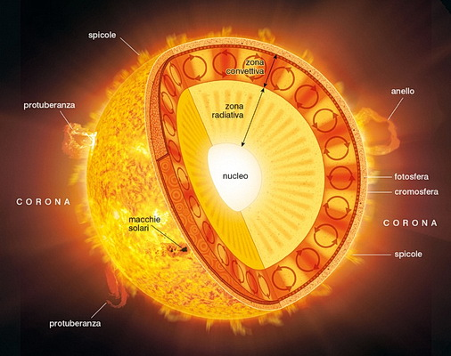

IL SOLE
Il Sole e' la stella madre del Sistema solare e la sua massa rappresenta da sola il 99,86% della massa complessiva di quest'ultimo.
Il Sole ripreso in falsi colori dal Solar Dynamics Observatory della NASA
Il Sole e' una stella di dimensioni medio-piccole costituita principalmente da idrogeno (circa il 74% della sua massa, il 92,1% del suo volume) ed elio (circa il 24-25% della massa, il 7,8% del volume), cui si aggiungono altri elementi piu' pesanti presenti in tracce.

E' classificato come una "nana gialla" di tipo spettrale G2 V:
-"G2" indica che la stella ha una temperatura ufficiale di 5777 K, caratteristica che le conferisce un colore bianco estremamente intenso e cromaticamente freddo, che pero' spesso puo' apparire giallognolo, a causa della diffusione luminosa nell'atmosfera terrestre, in ragione dell'elevazione dell'astro sull'orizzonte e nondimeno della limpidezza atmosferica.
- V (5 in numeri romani) indica che il Sole, come la maggior parte delle stelle, e' nella sequenza principale, ovvero in una lunga fase di equilibrio stabile in cui l'astro fonde, nel proprio nucleo, l'idrogeno in elio. Tale processo genera ogni secondo una grande quantita' di energia emessa nello spazio sotto forma di radiazioni elettromagnetiche (radiazioni solari), flusso di particelle (vento solare) e neutrini. La radiazione solare, emessa fondamentalmente come luce visibile ed infrarossi, consente la vita sulla Terra fornendo l'energia necessaria ad attivare i principali meccanismi che ne stanno alla base; inoltre l'insolazione della superficie terrestre regola il clima e la maggior parte dei fenomeni meteorologici.
Collocato all'interno del Braccio di Orione, un braccio secondario della spirale galattica, il Sole orbita attorno al centro della Via Lattea ad una distanza media di circa 26000 anni luce e completa la propria rivoluzione in 225-250 milioni di anni.